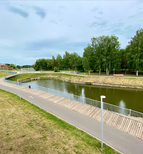
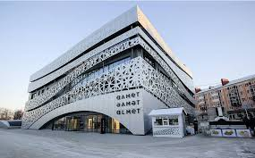
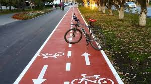

Альметьевск — четвертый по величине город Татарстана, официально признанный «нефтяной столицей» республики. Расположен на склонах Бугульминско-Белебеевской возвышенности, на левом берегу реки Зай. Это технологичный центр, штаб-квартира компании «Татнефть» и один из самых благоустроенных городов России.
Каскад прудов: Уникальная водная артерия в центре города. Это многокилометровая благоустроенная зона с набережными, мостами влюбленных и фонтанами, ставшая любимым местом для прогулок жителей и гостей.
История поселения началась в 1720-х годах (первое упоминание — 1735 год). Основателем считается мулла Альмет, в честь которого и назван город. До середины XX века это было тихое поселение в живописной долине.
Новая эра наступила в 1948 году с открытием легендарного Ромашкинского месторождения. Альметьевск стал стремительно расти, получив статус города в 1953 году, и превратился в мощный промышленный узел, откуда начинается крупнейший нефтепровод «Дружба».
Сейчас в Альметьевске живет около 170 тысяч человек. Это динамичный, комфортный город, который удивляет:


